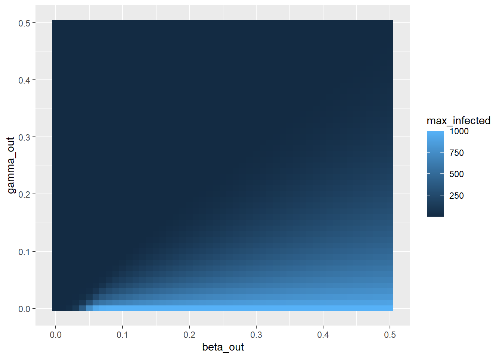
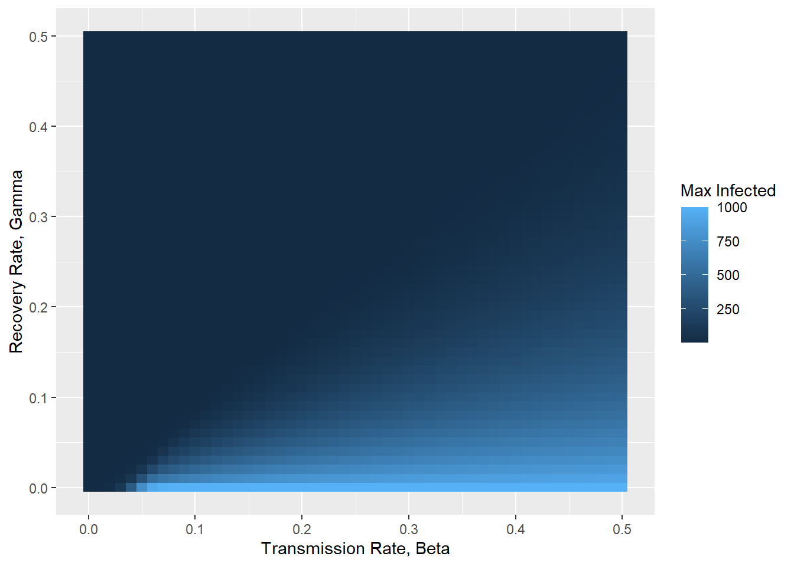

library(deSolve)
############################################################
# FUNCTION: run_sir_model
# PURPOSE: Solve deterministic SIR model with deSolve
# INPUTS:
# beta, gamma : transmission & recovery rates
# N : total population
# S0, I0, R0 : initial conditions
# t_start : start time
# t_end : end time
# dt : timestep
# OUTPUT:
# data.frame with columns: time, S, I, R
############################################################
# The function below solves the SIR model for a single parameter set and will be used inside your loops to conduct the parameter sweep.
run_sir_model <- function(
beta = 0.1,
gamma = 0.1,
N = 1000,
S0 = 999,
I0 = 1,
R0 = 0,
t_start = 0,
t_end = 160,
dt = 1
) {
init <- c(S = S0, I = I0, R = R0)
times <- seq(t_start, t_end, by = dt)
sir_equations <- function(time, state, parameters) {
with(as.list(c(state, parameters)), {
dS <- -beta * S * I / N
dI <- beta * S * I / N - gamma * I
dR <- gamma * I
list(c(dS, dI, dR))
})
}
out <- ode(
y = init,
times = times,
func = sir_equations,
parms = c(beta = beta, gamma = gamma, N = N)
)
as.data.frame(out)
}Homework_06
Homework 6
18 Feb 2026
Gwen Phillips
S(t) :Number of susceptible individuals I(t) :Number of infected individuals R(t) :Number of recovered individuals N : S+I+R(total population) βγ:Transmission rate:Recovery rate
library(deSolve)
FUNCTION: run_sir_model
PURPOSE: Solve deterministic SIR model with deSolve
INPUTS:
beta, gamma : transmission & recovery rates
N : total population
S0, I0, R0 : initial conditions
t_start : start time
t_end : end time
dt : timestep
OUTPUT:
data.frame with columns: time, S, I, R
Part 2
# creating parameter vectors
beta_vec <- seq(from = 0, to = 0.5, by = 0.01)
gamma_vec <- seq(from = 0, to = 0.5, by = 0.01)
# test code
beta_params=beta_vec
gamma_params=gamma_vec
# start of function "sir_param_sweep"
sir_param_sweep <- function(
beta_params,
gamma_params
){
### Creating storage df:
# finding the length of the df
df <- length(beta_params)*length(gamma_params)
# creating each column in the df
beta_out <- rep(NA, df)
gamma_out <- rep(NA, df)
max_infected <- rep(NA, df)
# creating the df
storage_df <- data.frame(beta_out, gamma_out, max_infected)
counter <- 1
for(i in seq_along(beta_params)){
for(j in seq_along(gamma_params)){
# run sir model
temp_df <- run_sir_model(beta = beta_params[i], gamma = gamma_params[j])
# store variables inside df
storage_df$max_infected[counter] <- max(temp_df$I)
storage_df$beta_out[counter] <- beta_params[i]
storage_df$gamma_out[counter] <- gamma_params[j]
# increasing the counter
counter <- counter + 1
}
}
return(storage_df)
}
# run_sir_model()
test_param_sweep <- sir_param_sweep(beta_params = beta_vec, gamma_params = gamma_vec)
library(ggplot2)
ggplot(test_param_sweep, aes(x = beta_out, y = gamma_out, fill = max_infected)) + geom_tile()
Part 3
plot_param_sweep <- function(
param_df
){
ggplot(param_df, aes(x = beta_out, y = gamma_out, fill = max_infected)) + geom_tile() + xlab("Transmission Rate, Beta") + ylab("Recovery Rate, Gamma") + labs(fill = "Max Infected")
}
plot_param_sweep(test_param_sweep)